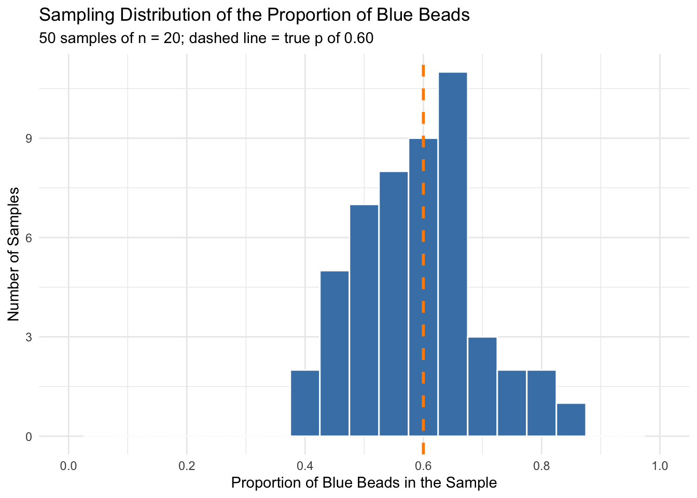
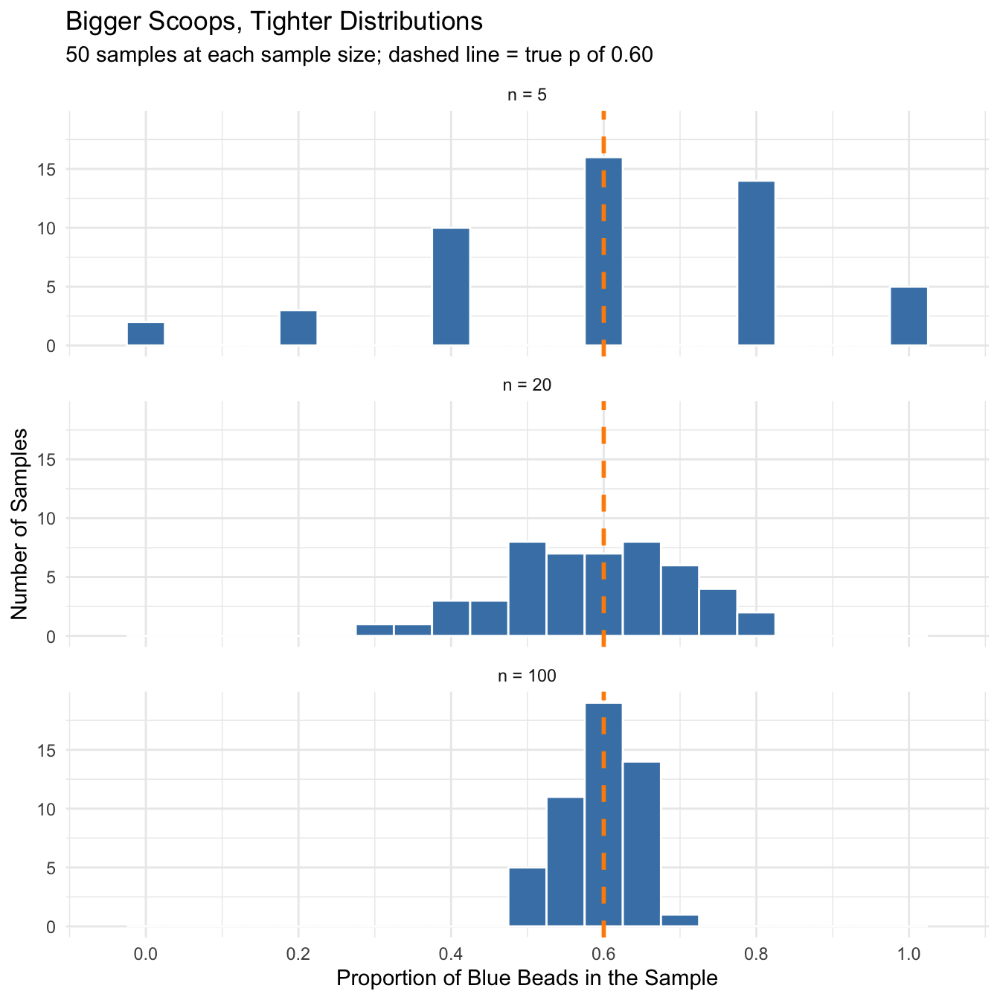

#Create population of beads in Jar
pop_size <- 1400
#Create percentage of white and blue beads
possible_beads <- c(rep("Blue", 0.60 * pop_size),
rep("White", 0.40 * pop_size))Sampling Distributions & the CLT for Proportions
Imagine a big jar full of blue and white beads. If you reach in and scoop out a handful, what proportion of your scoop will be blue? And if you scooped again, and again, and again, what pattern would all those answers make?
That simple question leads to one of the most important ideas in statistics: the sampling distribution. In this lesson we’ll build a jar of beads in R, take samples from it, and use what we see to understand the Central Limit Theorem (CLT) for a proportion.
The Jar of Beads
Our population is a jar of 1,400 beads. Sixty percent of the beads are blue and forty percent are white. Let’s build the jar in R.
The rep() function repeats a label a set number of times. Since 0.60 × 1,400 = 840, the first rep() creates 840 blue beads, and the second creates 560 white beads. The c() function combines them into one long vector called possible_beads. That vector is our jar.
Let’s check that the jar has the right number of each color.
table(possible_beads)possible_beads
Blue White
840 560 length(possible_beads)[1] 1400Parameter vs. Statistic
Because we built the jar ourselves, we know the true proportion of blue beads: 840 out of 1,400, or 0.60. A number that describes the whole population is called a parameter. For a proportion we use the symbol \(p\):
\[p = 0.60\]
In real research we almost never know the parameter. Instead, we take a sample and calculate a statistic that estimates it. The proportion of blue beads in a sample is called the sample proportion, written \(\hat{p}\) (“p-hat”):
\[\hat{p} = \frac{\text{number of blue beads in the sample}}{n}\]
The parameter \(p\) stays the same no matter what. The statistic \(\hat{p}\) changes every time we take a new sample. This scoop-to-scoop change is called sampling variability.
Taking One Scoop
Let’s take a single scoop of 20 beads from the jar.
#Keep randomized sample the same
set.seed(123)
#Randomly sample 20 from the population
sampled_beads <- sample(possible_beads, size = 20)
#Find percentage for sample
(sum(sampled_beads == "Blue")/20)[1] 0.45A few things are happening here:
set.seed(123)makes the random draw reproducible, so everyone who runs this code gets the same scoop.sample()draws 20 beads from the jar without replacement, just like scooping beads out of a real jar.sampled_beads == "Blue"givesTRUEorFALSEfor each bead.sum()counts theTRUEvalues, and dividing by 20 gives us \(\hat{p}\).
How close did our scoop come to the true value of 0.60? Probably close, but not exactly. Try changing the number inside set.seed() and running the code again. You’ll get a different \(\hat{p}\) each time.
Taking 50 Scoops
One scoop doesn’t tell us much about how \(\hat{p}\) behaves. Let’s take 50 scoops of 20 beads each and save the proportion of blue beads from every scoop.
set.seed(123)
prop_blue <- replicate(50, {
scoop <- sample(possible_beads, size = 20)
mean(scoop == "Blue")
})
prop_blue [1] 0.45 0.50 0.80 0.60 0.50 0.65 0.55 0.60 0.70 0.60 0.75 0.60 0.55 0.65 0.45
[16] 0.45 0.80 0.40 0.55 0.60 0.60 0.70 0.55 0.65 0.65 0.55 0.50 0.65 0.55 0.50
[31] 0.45 0.60 0.65 0.65 0.65 0.45 0.50 0.70 0.60 0.75 0.85 0.65 0.65 0.50 0.60
[46] 0.50 0.65 0.55 0.40 0.55The replicate() function runs the code inside the braces 50 times and collects the results. Notice that this time we used mean(scoop == "Blue") instead of sum(...)/20. Since R treats TRUE as 1 and FALSE as 0, the mean of those values is the proportion of blue beads. (Hang on to that idea; it will matter in a minute.)
Let’s look at the center and spread of our 50 sample proportions.
mean(prop_blue)[1] 0.591sd(prop_blue)[1] 0.1033569The average of our 50 sample proportions is 0.591, very close to the true value of 0.60. The standard deviation, 0.103, tells us how much the sample proportions typically vary from scoop to scoop.
Histogram of the Sample Proportions
A histogram lets us see the whole collection of sample proportions at once. This distribution of \(\hat{p}\) values is called the sampling distribution of the sample proportion.
ggplot(data.frame(prop_blue), aes(x = prop_blue)) +
geom_histogram(binwidth = 0.05, center = 0,
fill = "steelblue", color = "white") +
geom_vline(xintercept = 0.60, color = "darkorange",
linetype = "dashed", linewidth = 1) +
scale_x_continuous(limits = c(0, 1), breaks = seq(0, 1, by = 0.2)) +
labs(title = "Sampling Distribution of the Proportion of Blue Beads",
subtitle = "50 samples of n = 20; dashed line = true p of 0.60",
x = "Proportion of Blue Beads in the Sample",
y = "Number of Samples") +
theme_minimal()Warning: Removed 2 rows containing missing values or values outside the scale range
(`geom_bar()`).
Most scoops land somewhere around 0.60, and the further you get from 0.60, the fewer scoops there are. The histogram is centered on the true proportion and has a rough bell shape. That’s not an accident.
The Central Limit Theorem for a Proportion
The Central Limit Theorem tells us what the sampling distribution of \(\hat{p}\) looks like before we ever take a sample. It has two parts: one for the center of the distribution and one for its spread.
Part 1: The Mean of the Sampling Distribution
The mean of all the possible sample proportions equals the true population proportion:
\[\mu_{\hat{p}} = p\]
In other words, sample proportions are unbiased. Any single scoop might miss, but on average they hit the target. Our 50 scoops averaged 0.591, right around \(p = 0.60\).
Part 2: The Standard Error
The standard deviation of the sampling distribution is called the standard error (SE). For a proportion, it is:
\[SE_{\hat{p}} = \sqrt{\frac{p(1 - p)}{n}}\]
Let’s calculate it for our jar, where \(p = 0.60\) and \(n = 20\).
p <- 0.60
n <- 20
sqrt(p * (1 - p) / n)[1] 0.1095445Theory says the standard error should be about 0.110. Compare that to the standard deviation of our 50 simulated sample proportions, 0.103. Pretty close!
The Shape
Finally, the CLT says that when the sample is large enough, the sampling distribution of \(\hat{p}\) is approximately normal. Putting all three pieces together:
\[\hat{p} \sim N\left(p, \sqrt{\frac{p(1 - p)}{n}}\right)\]
Why It Works: A Proportion Is a Mean
Here’s the key idea that connects proportions to the CLT. Suppose we code each bead in a scoop as 1 if it’s blue and 0 if it’s white. A scoop might look like this:
scoop_coded <- c(1, 0, 1, 1, 0, 1, 0, 1, 0, 1,
0, 1, 1, 0, 1, 0, 0, 1, 1, 1)
sum(scoop_coded)[1] 12mean(scoop_coded)[1] 0.6The proportion of blue beads is just the mean of those 0s and 1s. A single bead can only be 0 or 1, which is about as far from a bell curve as you can get. But the Central Limit Theorem says that sample means become approximately normal as the sample size grows, no matter what shape the population has. Since \(\hat{p}\) is a sample mean, the CLT applies to it too. This is exactly what mean(scoop == "Blue") was doing in our code.
Conditions for Using the Normal Approximation
The CLT only works when certain conditions are met. Let’s check each one for our bead jar.
| Condition | Rule | Bead jar (\(n = 20\)) | Met? |
|---|---|---|---|
| Random | Data come from a random sample | sample() draws at random |
Yes |
| Independence | \(n \leq 10\%\) of the population | \(20 \leq 140\) | Yes |
| Large counts | \(np \geq 10\) and \(n(1-p) \geq 10\) | \(np = 12\), \(n(1-p) = 8\) | Borderline |
The large counts condition is the interesting one. With \(n = 20\) we expect 12 blue beads, but only 8 white beads, which falls short of 10. Some textbooks use 5 instead of 10 for this rule, and under that version we pass. So \(n = 20\) is right on the edge, which is why our histogram looks roughly bell-shaped but a little lumpy.
Why does this condition matter? When \(p\) is close to 0 or 1, the sampling distribution gets pushed up against the boundary and becomes skewed. A bigger sample pulls the distribution away from the edge.
Changing the Sample Size
What happens if we take bigger or smaller scoops? Let’s run the same 50-scoop simulation with \(n = 5\), \(n = 20\), and \(n = 100\).
#Function to take 50 scoops of size n and return the proportions
simulate_props <- function(n, reps = 50) {
replicate(reps, mean(sample(possible_beads, size = n) == "Blue"))
}
set.seed(123)
sims <- data.frame(
n = rep(c(5, 20, 100), each = 50),
prop_blue = c(simulate_props(5),
simulate_props(20),
simulate_props(100))
)
sims$n <- factor(sims$n, levels = c(5, 20, 100),
labels = c("n = 5", "n = 20", "n = 100"))ggplot(sims, aes(x = prop_blue)) +
geom_histogram(binwidth = 0.05, center = 0,
fill = "steelblue", color = "white") +
geom_vline(xintercept = 0.60, color = "darkorange",
linetype = "dashed", linewidth = 1) +
facet_wrap(~ n, ncol = 1) +
scale_x_continuous(limits = c(-0.05, 1.05), breaks = seq(0, 1, by = 0.2)) +
labs(title = "Bigger Scoops, Tighter Distributions",
subtitle = "50 samples at each sample size; dashed line = true p of 0.60",
x = "Proportion of Blue Beads in the Sample",
y = "Number of Samples") +
theme_minimal()Warning: Removed 6 rows containing missing values or values outside the scale range
(`geom_bar()`).
Let’s compare the simulated standard deviations to what the formula predicts.
sim_summary <- data.frame(
n = c(5, 20, 100),
mean_p_hat = round(tapply(sims$prop_blue, sims$n, mean), 3),
sd_p_hat = round(tapply(sims$prop_blue, sims$n, sd), 3),
theory_SE = round(sqrt(0.60 * 0.40 / c(5, 20, 100)), 3)
)
sim_summary n mean_p_hat sd_p_hat theory_SE
n = 5 5 0.608 0.246 0.219
n = 20 20 0.585 0.117 0.110
n = 100 100 0.595 0.044 0.049Three things stand out:
- The center stays put. No matter the sample size, the sample proportions center on 0.60.
- The spread shrinks. Bigger samples give sample proportions that cluster more tightly around 0.60.
- The shape gets more normal. With \(n = 5\), \(\hat{p}\) can only be 0, 0.2, 0.4, 0.6, 0.8, or 1, so the histogram is chunky. With \(n = 100\), the histogram looks much more like a bell curve.
The Standard Error Shrinks with √n
Since \(n\) sits under a square root in the standard error formula, the spread doesn’t shrink as fast as you might expect. Let’s see how the standard error changes as \(n\) grows.
n_values <- c(5, 20, 50, 80, 100, 400)
se_table <- data.frame(
n = n_values,
np = n_values * 0.60,
n_1_minus_p = n_values * 0.40,
SE = round(sqrt(0.60 * 0.40 / n_values), 3)
)
knitr::kable(se_table,
col.names = c("n", "np", "n(1 - p)", "Standard Error"))| n | np | n(1 - p) | Standard Error |
|---|---|---|---|
| 5 | 3 | 2 | 0.219 |
| 20 | 12 | 8 | 0.110 |
| 50 | 30 | 20 | 0.069 |
| 80 | 48 | 32 | 0.055 |
| 100 | 60 | 40 | 0.049 |
| 400 | 240 | 160 | 0.024 |
Going from \(n = 20\) to \(n = 80\) cuts the standard error in half, from 0.110 to 0.055. To cut the standard error in half, you need four times the sample size. Precision gets more expensive the more of it you want!
Check Your Understanding
- If the jar were 90% blue, would scoops of 20 beads meet the large counts condition?
- Predict the standard error of \(\hat{p}\) for scoops of 50 beads. Then change the R code and check your prediction.
- Why does the \(n = 5\) histogram only have bars at 0, 0.2, 0.4, 0.6, 0.8, and 1.0?
TipAnswers
- No. \(np = 20 \times 0.90 = 18\), but \(n(1 - p) = 20 \times 0.10 = 2\), which is far below 10. The sampling distribution would be skewed and bunched up against 1.0.
- \(SE = \sqrt{0.60 \times 0.40 / 50} \approx 0.069\). Your simulated standard deviation should land close to that.
- With only 5 beads, the number of blue beads can only be 0, 1, 2, 3, 4, or 5. Dividing by 5 gives only six possible values of \(\hat{p}\). Small samples produce a chunky, discrete sampling distribution, which is one reason the normal approximation doesn’t work well for them.
Key Takeaways
- Samples vary, but predictably. Any one \(\hat{p}\) will probably miss \(p\), but the collection of all the \(\hat{p}\) values centers on \(p\) with a spread we can calculate.
- The CLT gives us the shape. Because \(\hat{p}\) is a mean of 0s and 1s, it is approximately normal with mean \(p\) and standard error \(\sqrt{p(1-p)/n}\), as long as the sample is large enough.
- Check the conditions. The sample should be random, independent (no more than 10% of the population), and large enough that \(np\) and \(n(1-p)\) are both at least 10. When \(p\) is close to 0 or 1, you’ll need a bigger sample.
Knowing what the sampling distribution of \(\hat{p}\) looks like is what lets us build confidence intervals and run hypothesis tests for a proportion. That’s where we’re headed next!